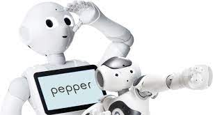
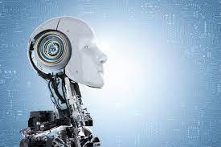

MIEMBROS

PEPE MARQUES
COORDINADOR/PROGRAMADOR- 
ÁLVARO ARBONA
PROGRAMADOR 
PAU MONTAGUT
PROGRAMADOR
MIGUEL DE DIEGO
PROGRAMADOR- 
JOSEP MARÍN
PROGRAMADOR
MEMORIA
En septiembre de 2022 tuvimos la oportunidad de participar en el concurso CEABOT, una competición nacional de robots humanoides organizada por el Comité Español de Automática. Fue nuestra primera experiencia como equipo y nos sentimos muy ilusionados y motivados.
Para preparar el concurso tuvimos que diseñar y programar dos robots: uno humanoide y otro móvil. El robot humanoide se llama Pepe y está basado en el modelo Darwin-OP2. El robot móvil se llama R2D2 y está construido con piezas de Lego Mindstorms EV3. Ambos robots tienen sensores y actuadores que les permiten interactuar con el entorno.
El concurso constaba de cuatro pruebas: una de movilidad, una de sumo, una de visión y una prueba libre. En la prueba de movilidad los robots tenían que hacer una carrera de ida y vuelta esquivando obstáculos. En la prueba de sumo los robots tenían que empujar al rival fuera del tatami. En la prueba de visión el robot tenía que seguir un código qr. Y en la prueba libre los robots podían mostrar sus habilidades más creativas.
Para superar estas pruebas tuvimos que trabajar duro durante varios meses. Nos reuníamos varias veces por semana para programar los robots, hacer pruebas, solucionar problemas y mejorar las prestaciones. También contamos con el apoyo del programa institucional UJILab Innovación y del Centro de Investigación en Robótica y Tecnologías Subacuáticas (CIRTESU) de la UJI. Además, fuimos acompañados por los profesores Raül Marín y Enric Cervera, que nos asesoraron y orientaron durante todo el proceso.
El día del concurso viajamos a La Rioja con nuestros robots, fue muy interesante conocer a otros estudiantes apasionados por la robótica e intercambiar impresiones e ideas.
Durante las pruebas vivimos momentos muy emocionantes e intensos. Nuestros robots se comportaron muy bien y demostraron su capacidad para superar los retos propuestos.
Finalmente conseguimos llegar a la final contra el equipo GROMEP de la Universitat Politècnica de València del Campus de Alcoy.
Fue una final muy reñida e igualada que se decidió por pequeños detalles.
Aunque no pudimos ganar, nos sentimos muy orgullosos de haber quedado subcampeones en nuestra primera participación en CEABOT.
Esta experiencia ha sido muy positiva para nosotros porque hemos aprendido mucho sobre robótica humanoide, hemos mejorado nuestras competencias técnicas y transversales, hemos hecho nuevos amigos y nos hemos divertido mucho.
Queremos agradecer a todos los que nos han apoyado durante este proyecto: a nuestros profesores Raül Marín y Enric Cervera, al programa UJILab Innovación,
al Centro CIRTESU, a nuestros patrocinadores, a nuestros compañeros y familiares, y al Comité Español de Automática por organizar este fantástico concurso.
Ahora estamos preparando nuevos proyectos para participar en otras competiciones y seguir creciendo como equipo.
También queremos ampliar nuestro equipo con miembros de otras titulaciones y buscar nuevos patrocinadores que nos ayuden a financiar nuestros proyectos.